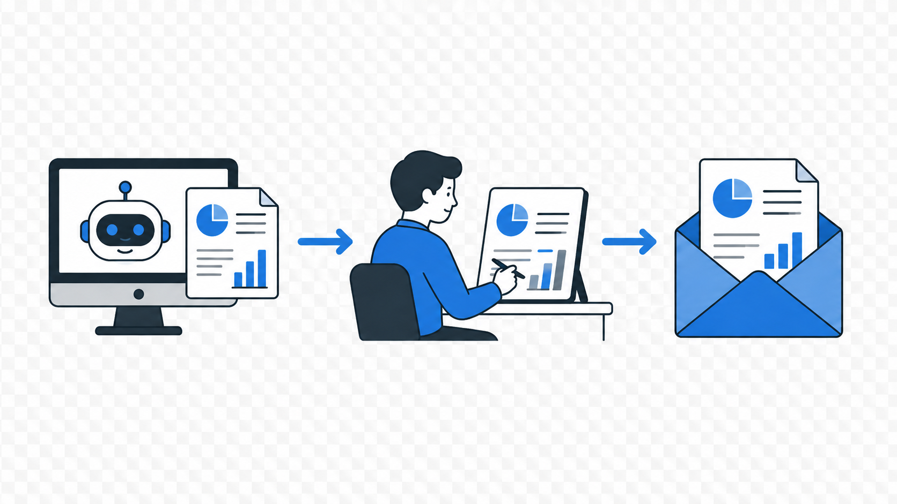
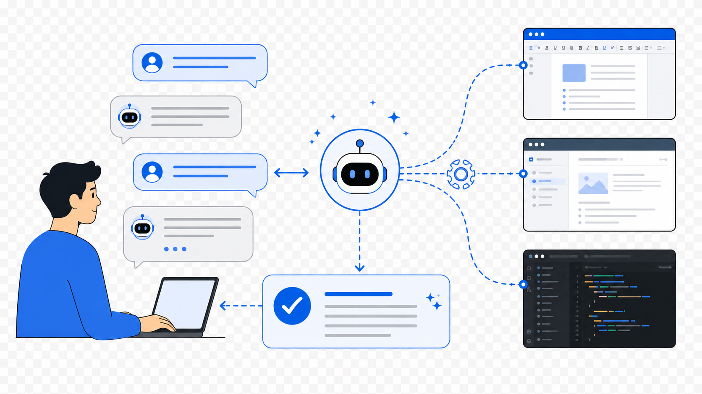

AI 에이전트의
효과적인 활용
채팅형 질의응답에서 실행 가능한 분석 루프로
Agent workflow seminar

오늘의 흐름
01채팅형 AI의 한계질문 · 답변 · 복붙 오케스트레이션
02MCP표준 커넥터와 도구 생태계
03Skill반복 작업 프롬프트의 패키징
04Agent WorkflowMCP 도구와 Skill 절차를 실행 루프로 연결
05Effective Instruction역할 경계와 Harness 설계
06APK Analyzer재현 가능한 APK 분석 Harness
PART 01
채팅형 AI의
한계
답변 중심 사용이 왜 실행 가능한 작업 흐름으로 바로 이어지지 않는지 봅니다.
Chat-style workflow
질문 · 답변 · 복사 · 실행
일반 채팅형 AI는 작업을 끝내는 대신 다음 행동을 설명합니다.

Starting point
답변은 작업 완료가 아닙니다
flowchart TB
Q["질문"]:::input --> A(("텍스트 답변")):::core
A --> Human["사람이 복사하고 오케스트레이션"]:::human
A -.-> F["APK / Manifest는 그대로"]:::gap
A -.-> R["재현 결과 없음"]:::gap
A -.-> V["검증 증거 없음"]:::gap
A -.-> C["대상 상태 모름"]:::gap
Human --> Done["보조/대체 구조는 아직 아님"]:::warn
classDef input fill:#0f172a,stroke:#60a5fa,color:#dbeafe,stroke-width:2px;
classDef core fill:#1d4ed8,stroke:#bfdbfe,color:#ffffff,stroke-width:2.6px;
classDef human fill:#111827,stroke:#94a3b8,color:#f8fafc,stroke-width:1.8px;
classDef gap fill:#3f1d1d,stroke:#fca5a5,color:#fee2e2,stroke-width:1.8px;
classDef warn fill:#422006,stroke:#fbbf24,color:#fffbeb,stroke-width:2px;
Why tools matter
도구가 붙어야
상태가 들어옵니다
AndroidManifest, decompiled code, device state, 실행 로그는 모델 밖에서 들어옵니다.
Tool calling
모델이 고른다
sequenceDiagram autonumber participant U as User participant A as App participant M as Model participant T as Android Tool / MCP U->>A: Prompt A->>M: Prompt + tool schemas M-->>A: Tool call(name, args) A->>T: Execute jadx / adb / parser T-->>A: Structured result A->>M: Tool result Note over A,M: App executes. Model interprets. M-->>A: Final answer A-->>U: Response
PART 02
MCP
AI용 표준 커넥터
MCP structure
Model이 판단하고
Client가 연결한다
flowchart TB Model(["AI Model: tool call 판단"]):::model --> Host["Host App: context + policy"]:::host Host --> C1["IDE / Coding Client"]:::client Host --> C2["Mobile Audit Harness"]:::client Host --> C3["Reverse Engineering UI"]:::client C1 --> S1[["Repo / Manifest Server"]]:::server C2 --> S2[["JADX / APK Server"]]:::server C2 --> S3[["Frida / Device Server"]]:::server C3 --> S4[["Ghidra / IDA Server"]]:::server S1 --> Cap["Tools / Resources / Findings"]:::cap S2 --> Cap S3 --> Cap S4 --> Cap classDef model fill:#1d4ed8,stroke:#bfdbfe,color:#ffffff,stroke-width:2.6px; classDef host fill:#0f172a,stroke:#60a5fa,color:#dbeafe,stroke-width:2px; classDef client fill:#164e63,stroke:#67e8f9,color:#ecfeff,stroke-width:2px; classDef server fill:#0f766e,stroke:#99f6e4,color:#ffffff,stroke-width:2.4px; classDef cap fill:#052e2b,stroke:#5eead4,color:#ecfeff,stroke-width:2px;
Before and after
MCP 이전과 이후
flowchart TB
subgraph ABefore["Before: custom wiring"]
BA["IDE Agent"]:::app --> B1["rg wrapper"]:::wire --> BT1["AndroidManifest.xml"]:::external
BA --> B2["jadx script"]:::wire --> BT2["Decompiled code"]:::external
BB["Audit UI"]:::app --> B3["frida script"]:::wire --> BT3["Device runtime"]:::external
BB --> B4["Ghidra bridge"]:::wire --> BT4["Native libs"]:::external
end
subgraph BAfter["After: MCP standard"]
HA["IDE Agent"]:::client --> HC1["MCP Client"]:::bridge
HB["Audit Harness"]:::client --> HC2["MCP Client"]:::bridge
HC1 --> HS1[["Manifest / Source Server"]]:::server
HC1 --> HS2[["JADX Server"]]:::server
HC2 --> HS1
HC2 --> HS3[["Frida / ADB Server"]]:::server
HC2 --> HS4[["Ghidra / IDA Server"]]:::server
HS1 --> HT1["APK / source"]:::external
HS2 --> HT2["DEX view"]:::external
HS3 --> HT3["Device evidence"]:::external
HS4 --> HT4["Native analysis"]:::external
end
classDef app fill:#111827,stroke:#fca5a5,color:#fee2e2,stroke-width:1.8px;
classDef wire fill:#3f1d1d,stroke:#fb7185,color:#ffe4e6,stroke-width:2px;
classDef client fill:#0f172a,stroke:#60a5fa,color:#dbeafe,stroke-width:1.8px;
classDef bridge fill:#164e63,stroke:#67e8f9,color:#ecfeff,stroke-width:2px;
classDef server fill:#0f766e,stroke:#99f6e4,color:#ffffff,stroke-width:2.4px;
classDef external fill:#1f2937,stroke:#94a3b8,color:#f8fafc,stroke-width:1.5px;
Filesystem MCP
파일 접근도
도구 호출로 제한한다
허용된 디렉터리 안에서 read · list · search · parse
flowchart TB Request["요청: exported components 찾기"]:::input --> Host["Host / MCP Client
model selects tool"]:::host Host --> Server[["Filesystem MCP Server"]]:::server Server --> Verify["allowed roots check
read / list / search / parse
manifest / source / JSON
evidence review"]:::success classDef input fill:#111827,stroke:#94a3b8,color:#f8fafc,stroke-width:1.5px; classDef host fill:#0f172a,stroke:#60a5fa,color:#dbeafe,stroke-width:2px; classDef model fill:#1d4ed8,stroke:#bfdbfe,color:#ffffff,stroke-width:2.5px; classDef client fill:#164e63,stroke:#67e8f9,color:#ecfeff,stroke-width:2px; classDef server fill:#0f766e,stroke:#99f6e4,color:#ffffff,stroke-width:2.4px; classDef guard fill:#422006,stroke:#fbbf24,color:#fffbeb,stroke-width:2px; classDef deny fill:#3f1d1d,stroke:#fca5a5,color:#fee2e2,stroke-width:2px; classDef tool fill:#052e2b,stroke:#5eead4,color:#ecfeff,stroke-width:2px; classDef success fill:#064e3b,stroke:#5eead4,color:#ecfeff,stroke-width:2px;
Standardization
여러 클라이언트
여러 모델
같은 외부 도구
MCP directory
Mobile Security MCP
분석 도구를 AI가 호출 가능한 서버로 감쌉니다.
Static
jadx · apktool · aapt
Dynamic
adb · Frida · objection
Native
Ghidra · IDA Pro
도구는 실행하고, AI는 결과를 해석합니다.
Important distinction
MCP ≠ Agent
연결은 시작이고, 실행 루프가 핵심입니다.
MCP in daily work
MCP로 일상 작업을 실행합니다
flowchart LR Ask["이 repo에서
exported Activity 찾아줘"]:::ask --> Model["AI"]:::model Model --> Tools["MCP tools"]:::tool Tools --> T1["list files"]:::step Tools --> T2["read manifest"]:::step Tools --> T3["rg source"]:::step Tools --> T4["parse XML"]:::step T1 --> Evidence["evidence summary"]:::success T2 --> Evidence T3 --> Evidence T4 --> Evidence classDef ask fill:#0f172a,stroke:#67e8f9,color:#ecfeff,stroke-width:2px; classDef model fill:#1d4ed8,stroke:#bfdbfe,color:#ffffff,stroke-width:2.4px; classDef tool fill:#0f766e,stroke:#99f6e4,color:#ffffff,stroke-width:2.3px; classDef step fill:#111827,stroke:#60a5fa,color:#dbeafe,stroke-width:1.8px; classDef success fill:#064e3b,stroke:#5eead4,color:#ecfeff,stroke-width:2px;
From prompt to skill
반복 작업은
프롬프트 패턴이 됩니다
주의사항
건드리면 안 되는 파일, 기기 실행 권한, false positive 기준
작업 순서
manifest → source hit → permission → evidence → report
사용 툴
read_file, rg, manifest parser, jadx, adb, Frida
출력 형식
component, risk, evidence, caveat, validation command
이 최적화된 프롬프트를 패키징하고 관리하는 형태가 Skill입니다.
PART 03
Skills
반복되는 감사 절차를 표준화하는 방식입니다.
Reusable audit procedure
반복되는 감사 절차는
Skill로 형식화합니다
작업 지시의 4요소를 매번 붙여넣는 대신, 팀의 표준 감사 workflow로 재사용합니다.
Agent Skill
Skill은 실행 도구가 아니라
절차 패키지입니다
my-skill/ ├── SKILL.md # metadata + instructions ├── scripts/ # optional executable code ├── references/ # policies, API specs, checklists └── assets/ # templates, examples, static files
Tool · MCP · Skill
무엇을 할 수 있는가와
어떻게 할 것인가는 다릅니다
Tool
read, jadx, adb, frida처럼 실행 가능한 기능
MCP
외부 도구와 데이터를 연결하는 표준 프로토콜
Skill
도구를 어떤 순서와 기준으로 쓸지 정한 workflow
Progressive disclosure
필요할 때만 자세히 읽습니다
flowchart TB
Catalog["name + description"]:::catalog --> Match{"task matches?"}:::decision
Match -->|no| Skip["do not load"]:::muted
Match -->|yes| Skill["read SKILL.md"]:::skill
Skill --> Refs["references/"]:::file
Skill --> Scripts["scripts/"]:::file
Skill --> Assets["assets/"]:::file
Skill --> Tools["use tools / MCP / shell"]:::tool
Tools --> Evidence["evidence report"]:::success
classDef catalog fill:#0f172a,stroke:#67e8f9,color:#ecfeff,stroke-width:2px;
classDef decision fill:#422006,stroke:#fbbf24,color:#fffbeb,stroke-width:2px;
classDef muted fill:#1f2937,stroke:#64748b,color:#cbd5e1,stroke-width:1.5px;
classDef skill fill:#0f766e,stroke:#99f6e4,color:#ffffff,stroke-width:2.5px;
classDef file fill:#111827,stroke:#60a5fa,color:#dbeafe,stroke-width:1.8px;
classDef tool fill:#1e3a8a,stroke:#93c5fd,color:#eff6ff,stroke-width:2px;
classDef success fill:#064e3b,stroke:#5eead4,color:#ecfeff,stroke-width:2px;
Good candidates
절차가 중요한 작업이 Skill 후보입니다
android-audit
manifest, storage, network, crypto, logs
webview-audit
bridge, file access, mixed content, 허용 목록
open-components
exported, permission, intent-filter, deep link
Skill template
좋은 Skill은 작업 지시서처럼 씁니다
--- name: android-open-components description: Use when auditing exported Android components, deep links, and missing permissions. --- Goal: Find externally reachable Android components. Inputs: merged-manifest.json, jadx source map, references/android-component-policy.md Procedure: 1. Parse manifest into structured component records. 2. Join each component with source and permission context. 3. Ask the model to judge risk, not to rediscover facts. Output: component table, evidence, risk, validation command.
PART 04
Agent Workflow
MCP 도구와 Skill 절차를 실행 루프로 연결합니다.
flowchart TB Task["User task"]:::input --> Skill["Skill
procedure · cautions · output schema"]:::skill Skill --> Plan((Plan)):::core Plan --> Act((Act)):::core Tools[["MCP tools
read · rg · parser · adb · frida"]]:::tool --> Act Act --> Evidence["Tool result / evidence"]:::evidence Evidence --> Observe((Observe)):::core Observe -->|failed| Revise((Revise)):::warn Revise --> Plan Observe -->|verified| Done["Evidence report"]:::success classDef input fill:#0f172a,stroke:#64748b,color:#e2e8f0,stroke-width:1.5px; classDef skill fill:#0f766e,stroke:#99f6e4,color:#ffffff,stroke-width:2.4px; classDef tool fill:#164e63,stroke:#67e8f9,color:#ecfeff,stroke-width:2px; classDef evidence fill:#422006,stroke:#fbbf24,color:#fffbeb,stroke-width:2px; classDef core fill:#1e3a8a,stroke:#93c5fd,color:#eff6ff,stroke-width:2.4px; classDef warn fill:#78350f,stroke:#fbbf24,color:#fffbeb,stroke-width:2px; classDef success fill:#064e3b,stroke:#5eead4,color:#ecfeff,stroke-width:2px;
Agent definition
Agent = Model + Context + Tools + Verification
flowchart TB Model["Model"]:::core --> Agent["Agent loop"]:::agent Context["Android app context"]:::input --> Agent Tools["MCP tools / Shell / ADB / Frida"]:::tool --> Agent Skill["Skill procedure"]:::skill --> Agent Verify["Verification evidence"]:::verify --> Agent Agent --> Work["실행 가능한 분석 루프"]:::success classDef input fill:#0f172a,stroke:#64748b,color:#e2e8f0,stroke-width:1.5px; classDef core fill:#1d4ed8,stroke:#bfdbfe,color:#ffffff,stroke-width:2.4px; classDef tool fill:#0f766e,stroke:#99f6e4,color:#ffffff,stroke-width:2px; classDef skill fill:#164e63,stroke:#67e8f9,color:#ecfeff,stroke-width:2px; classDef verify fill:#422006,stroke:#fbbf24,color:#fffbeb,stroke-width:2px; classDef agent fill:#881337,stroke:#fda4af,color:#fff1f2,stroke-width:2.4px; classDef success fill:#064e3b,stroke:#5eead4,color:#ecfeff,stroke-width:2px;
Coding harness
모바일 보안 감사 에이전트
Codex
repo · manifest 탐색
Claude Code
계획 · 스크립트 · 리포트
Gemini CLI
ReAct + MCP 분석
Common anatomy
구조는 거의 비슷합니다
flowchart TB LLM[LLM]:::core --> Tools[Tool layer]:::tool Tools --> Loop[Planning / Action / Observe / Retry]:::loop Loop --> Context[Context management]:::context Context --> Verify[Execution and verification]:::success Verify --> Loop classDef core fill:#1d4ed8,stroke:#bfdbfe,color:#ffffff,stroke-width:2.5px; classDef tool fill:#111827,stroke:#60a5fa,color:#dbeafe,stroke-width:1.8px; classDef loop fill:#0f766e,stroke:#99f6e4,color:#ffffff,stroke-width:2.3px; classDef context fill:#422006,stroke:#fbbf24,color:#fffbeb,stroke-width:2px; classDef success fill:#064e3b,stroke:#5eead4,color:#ecfeff,stroke-width:2px;
Default tools
Read · Search · Parse · ADB · Frida · MCP
File and code tools
Manifest와 코드 탐색이 기본입니다
Manifest
exported, permission, intent-filter
Search
rg, fd, grep, jadx output
Parse
merged manifest, XML, call graph
Execution tools
증거가 있어야
진단합니다
./gradlew test adb shell pm dump aapt dump xmltree app.apk AndroidManifest.xml jadx --show-bad-code app.apk frida -U -f com.example.app semgrep --config android-audit.yml
Context management
대형 repo는 다 넣을 수 없습니다
- 관련 파일만 선택
- 중요 함수만 추출
- 최근 수정 파일 우선
- dependency graph와 summary memory 활용
What matters
현업 성능을 가르는 진짜 도구
Very important
Boosters
Ghidra · IDA Pro · call graph · taint rules · structured extractor
Security extension
모바일 보안 감사 Harness는 도구가 더 붙습니다
LLM ├─ manifest parser / rg / structured extractor ├─ jadx / apktool / aapt: APK와 DEX 정적 분석 ├─ adb / Frida / objection: 기기 실행과 런타임 확인 ├─ Semgrep / androguard: 규칙 기반 코드 점검 └─ Ghidra / IDA Pro: native library 분석
Agent workflow
사람 일을 보조하거나 대체합니다
flowchart TB Work["Human work"]:::start --> Harness["Tool / Harness
collect · parse · run"]:::tool Harness --> AI["AI judgment
analysis · PoC
diagnosis"]:::step AI --> Evidence["Evidence report"]:::evidence Evidence --> Human["Human
final analysis · follow-up"]:::success classDef start fill:#1d4ed8,stroke:#bfdbfe,color:#ffffff,stroke-width:2.5px; classDef tool fill:#0f766e,stroke:#99f6e4,color:#ffffff,stroke-width:2.2px; classDef step fill:#111827,stroke:#60a5fa,color:#dbeafe,stroke-width:1.8px; classDef evidence fill:#422006,stroke:#fbbf24,color:#fffbeb,stroke-width:2px; classDef success fill:#064e3b,stroke:#5eead4,color:#ecfeff,stroke-width:2px;
Real routine
Open components를 찾는 루프
flowchart TB
Ask["open components 찾아줘"]:::run --> Find[find AndroidManifest]:::step
Find --> Grep[rg exported / intent-filter]:::step
Grep --> Guess[AI interprets candidates]:::warn
Guess --> Miss{missing risk?}:::decision
Miss -->|possible| Extract[structured manifest JSON]:::step
Extract --> Judge[AI judges risk]:::run
Judge --> Report[Report evidence]:::success
classDef run fill:#1e3a8a,stroke:#93c5fd,color:#eff6ff,stroke-width:2px;
classDef warn fill:#7f1d1d,stroke:#fca5a5,color:#fee2e2,stroke-width:2px;
classDef step fill:#111827,stroke:#60a5fa,color:#dbeafe,stroke-width:1.8px;
classDef decision fill:#422006,stroke:#fbbf24,color:#fffbeb,stroke-width:2px;
classDef success fill:#064e3b,stroke:#5eead4,color:#ecfeff,stroke-width:2px;
Example prompt
요청은 이렇게 구체화합니다
목표: Android 앱의 exported component를 찾아 위험도를 판단하세요. 범위: app 모듈의 merged manifest와 decompiled code만 보세요. 제약: 소스 수정 없이 분석 리포트만 작성하세요. 검증: manifest extractor JSON과 aapt 출력이 일치해야 합니다. 보고: component, exported 이유, permission, evidence, risk를 표로 내세요.
Done report
끝은 요약이 아니라 증거입니다
Finding: LoginDeepLinkActivity is exported by intent-filter. Evidence: - merged-manifest.json: exported=true - AndroidManifest.xml: intent-filter VIEW/BROWSABLE - source: reads token from deep link parameter Risk: - external app can trigger login flow 남은 리스크: - dynamic validation on device is still required
PART 05
효과적인 지시와
Harness 설계
모바일 보안 감사에서 적은 토큰으로 정확한 결과를 만드는 구조
Guardrail boundary
도구만으로는 부족합니다
"하지 마"는 확률적이고, Hook은 결정적입니다.
Prompt guard
위험한 명령은 실행하지 마
모델이 지시를 따르도록 유도하지만, tool call이 생성될 가능성 자체를 제거하지는 못합니다.
Runtime hook
실행 전에 정책으로 차단
Harness가 tool call을 가로채고 allowlist, 권한, 경로, 대상 앱, 로그, 종료 조건을 검사합니다.
Instruction quality
AI에게는 일이 아니라
작업 경계를 줍니다
Goal
무엇을 끝내야 하는가
Android App Context
manifest, API level, policy
Boundary
어디까지 바꿀 수 있는가
Evidence
무엇으로 판단을 증명하는가
Accuracy and token budget
정확도는 넓은 컨텍스트가 아니라
좋은 선별에서 나옵니다
flowchart TB Request["User request"]:::input --> Spec["Audit spec"]:::core Spec --> Facts["structured Android facts"]:::step Spec --> Context["selected policy context"]:::step Facts --> Judge["AI risk judgment
+ evidence-backed finding"]:::success Context --> Judge Facts -.-> Noise["less source text"]:::benefit Context -.-> Accuracy["fewer wrong assumptions"]:::benefit classDef input fill:#0f172a,stroke:#64748b,color:#e2e8f0,stroke-width:1.5px; classDef core fill:#0f766e,stroke:#99f6e4,color:#ffffff,stroke-width:2.5px; classDef step fill:#111827,stroke:#60a5fa,color:#dbeafe,stroke-width:1.8px; classDef success fill:#064e3b,stroke:#5eead4,color:#ecfeff,stroke-width:2px; classDef benefit fill:#422006,stroke:#fbbf24,color:#fffbeb,stroke-width:1.8px;
Harness job
Harness는 귀찮은 일을 도구화합니다
flowchart TB Work["Human audit task"]:::input --> Spec["Audit spec"]:::core Spec --> Harness["Harness
deterministic collection"]:::tool Harness --> AI["AI judgment
analysis · PoC · diagnosis"]:::loop AI --> Evidence["Evidence report"]:::success Evidence --> Human["Human follow-up"]:::human Spec --> Guard[Tool and device policy]:::guard Guard --> Harness classDef input fill:#0f172a,stroke:#64748b,color:#e2e8f0,stroke-width:1.5px; classDef core fill:#0f766e,stroke:#99f6e4,color:#ffffff,stroke-width:2.5px; classDef tool fill:#111827,stroke:#5eead4,color:#ccfbf1,stroke-width:1.8px; classDef loop fill:#1d4ed8,stroke:#bfdbfe,color:#ffffff,stroke-width:2.4px; classDef guard fill:#422006,stroke:#fbbf24,color:#fffbeb,stroke-width:2px; classDef human fill:#111827,stroke:#94a3b8,color:#f8fafc,stroke-width:1.8px; classDef success fill:#064e3b,stroke:#5eead4,color:#ecfeff,stroke-width:2px;
Required parts
좋은 Harness의 구성 요소
Human Workflow Map
사람이 하던 보안 감사 업무를 분해
Tool / Harness
귀찮고 결정적인 처리를 코드화
Android App Context
Manifest, Gradle, API 정책만 주입
AI Judgment Boundary
코드 분석, PoC 시도, 취약점 진단
Stop Conditions
성공, 실패, 질문, 예산 초과
Human Follow-up
최종 분석, 조치, 티켓과 패치
Deterministic output
귀찮고 결정적인 일은
Harness가 합니다
Code agent only
find AndroidManifest + rg
사람이 하던 검색을 AI가 텍스트로 반복하면 대체로 맞지만 누락될 수 있고 시간과 비용이 듭니다.
Structured extractor
merged manifest → JSON
Harness가 facts를 만들고, AI는 취약점 여부와 영향 판단에 집중합니다.
Reproducibility
재현성은 도구 증거에서 나옵니다
Input
고정된 APK / source
Tool
동일한 parser와 명령
Env
API level과 기기 상태
Log
실행 증거와 JSON
Stop conditions
종료 조건을 Harness에 박아둡니다
flowchart TB
Verify{Verification result}:::decision
Verify -->|pass| Done[Done: report evidence]:::success
Verify -->|known failure| Revise[Revise within scope]:::step
Verify -->|unclear| Ask[Ask user to choose]:::ask
Verify -->|budget exceeded| Stop[Stop with findings]:::stop
Revise --> Verify
classDef decision fill:#422006,stroke:#fbbf24,color:#fffbeb,stroke-width:2.2px;
classDef step fill:#111827,stroke:#60a5fa,color:#dbeafe,stroke-width:1.8px;
classDef ask fill:#164e63,stroke:#67e8f9,color:#ecfeff,stroke-width:2px;
classDef stop fill:#3f1d1d,stroke:#fca5a5,color:#fee2e2,stroke-width:2px;
classDef success fill:#064e3b,stroke:#5eead4,color:#ecfeff,stroke-width:2px;
Ambiguous input
불명확하면 바로 실행하지 않습니다
Bad
모바일 앱 취약점 찾아줘
대상 APK, build variant, 권한 기준, 검증 방법이 없습니다.
Better
감사 범위와 산출물을 좁힙니다
open components, WebView, storage, crypto처럼 검사 항목을 먼저 정합니다.
WebView example
웹뷰 취약점 요청을 구조화합니다
01
취약점 후보군 나열
02
manifest / jadx scan
03
허용 목록 / bridge 확인
04
ADB / Frida 증거 보고
Tool-backed verification
더 좋은 Harness는 확인 도구를 제공합니다
요청: 웹뷰 취약점 찾아줘 Harness가 바꾸는 방식: 1. 후보군: JS bridge 노출, file access, mixed content, 허용 목록 우회 2. 정적 검사: AndroidManifest, WebView 설정, addJavascriptInterface 검색 3. 동적 확인: ADB로 Activity를 실행하고 Frida로 bridge 호출 관찰 4. 도구: jadx / adb / Frida MCP로 코드, 기기, 런타임 증거 수집 5. 종료: 재현 가능 증거 또는 확인 불가 사유 보고
PART 06
APK Analyzer
재현 가능한 APK 분석 파이프라인 위에 LLM 탐색 Harness를 얹습니다.
Architecture overview
전체 아키텍처
flowchart TD A["APK 업로드 / 분석 요청"]:::input --> B["job.json 생성
artifacts/{jobId} workspace"]:::setup B --> C["APK 로컬 분석
Manifest · JADX · Semgrep · XML report"]:::local C --> D["LLM Task Queue"]:::queue D --> X["LLM 호출 레이어
CodexCliAdapter · codex exec"]:::llm X --> F["Finding별 LLM Follow-up"]:::finding F --> R["Report / Scenario / Autonomous 종합 분석
summary · scenario review · ASR"]:::review R --> Z["최종 산출물
XML report + follow-up + summary + scenario + ASR"]:::output classDef input fill:#0f172a,stroke:#64748b,color:#e2e8f0,stroke-width:1.5px; classDef setup fill:#111827,stroke:#94a3b8,color:#f8fafc,stroke-width:1.6px; classDef local fill:#0f766e,stroke:#99f6e4,color:#ffffff,stroke-width:2.2px; classDef queue fill:#422006,stroke:#fbbf24,color:#fffbeb,stroke-width:2px; classDef llm fill:#1d4ed8,stroke:#bfdbfe,color:#ffffff,stroke-width:2.4px; classDef finding fill:#881337,stroke:#fda4af,color:#fff1f2,stroke-width:2.2px; classDef review fill:#312e81,stroke:#c4b5fd,color:#ffffff,stroke-width:2.4px; classDef output fill:#064e3b,stroke:#5eead4,color:#ecfeff,stroke-width:2.2px;
LLM call layer
LLM Invocation Layer
flowchart TD A["LLM 작업 요청
finding follow-up / report audit / scenario / ASR"]:::input --> B["LlmInvocationSpec 생성"]:::spec B --> C["LLM Runtime Abstraction
LlmRuntimePort"]:::port C --> D{"Provider 선택
APK_ANALYSIS_LLM_PROVIDER"}:::decision D -->|codex| E["CodexCliAdapter"]:::codex D -->|api_harness| H["HarnessRuntimeAdapter"]:::harness subgraph CODEX["Codex 경로"] E --> E1["prompt + context files 구성"]:::step E1 --> E2["codex exec --json --ephemeral"]:::run E2 --> E3["output.json 생성"]:::artifact E2 --> E4["llm-cli-exec.txt / metrics 저장"]:::artifact end subgraph HARNESS["API Harness 경로"] H --> H1["harness-request.json 생성"]:::step H1 --> H2["llm_harness CLI 실행
run-spec"]:::run H2 --> H3["OpenAI-compatible API 호출"]:::api H3 --> H4["tool loop
rg / read_file / list_dir / lookup"]:::tool H4 --> H5["strict JSON output 생성"]:::json H5 --> H6["output.json 생성"]:::artifact H5 --> H7["tool-trace.jsonl / metadata 저장"]:::artifact end classDef input fill:#0f172a,stroke:#64748b,color:#e2e8f0,stroke-width:1.5px; classDef spec fill:#422006,stroke:#fbbf24,color:#fffbeb,stroke-width:2px; classDef port fill:#312e81,stroke:#c4b5fd,color:#ffffff,stroke-width:2.2px; classDef decision fill:#111827,stroke:#fca5a5,color:#fee2e2,stroke-width:2.2px; classDef codex fill:#1d4ed8,stroke:#bfdbfe,color:#ffffff,stroke-width:2.4px; classDef harness fill:#0f766e,stroke:#99f6e4,color:#ffffff,stroke-width:2.4px; classDef step fill:#111827,stroke:#94a3b8,color:#f8fafc,stroke-width:1.6px; classDef run fill:#111827,stroke:#60a5fa,color:#dbeafe,stroke-width:1.8px; classDef api fill:#1e3a8a,stroke:#93c5fd,color:#eff6ff,stroke-width:2px; classDef tool fill:#881337,stroke:#fda4af,color:#fff1f2,stroke-width:2px; classDef json fill:#0f766e,stroke:#99f6e4,color:#ffffff,stroke-width:2px; classDef artifact fill:#064e3b,stroke:#5eead4,color:#ecfeff,stroke-width:2.2px;
Finding follow-up
Finding Follow-up
flowchart TD E["Finding별 LLM Follow-up 작업"]:::start --> F1["finding-1
context.json"]:::ctx E --> F2["finding-2
context.json"]:::ctx E --> F3["finding-N
context.json"]:::ctx F1 --> X["LLM 호출 레이어"]:::llm F2 --> X F3 --> X X --> G["각 finding summary / report 저장
raw/finding_follow_up/..."]:::store G --> H0["Report 종합 분석 시작"]:::next classDef start fill:#422006,stroke:#fbbf24,color:#fffbeb,stroke-width:2px; classDef ctx fill:#111827,stroke:#60a5fa,color:#dbeafe,stroke-width:1.8px; classDef llm fill:#1d4ed8,stroke:#bfdbfe,color:#ffffff,stroke-width:2.4px; classDef store fill:#0f766e,stroke:#99f6e4,color:#ffffff,stroke-width:2.2px; classDef next fill:#064e3b,stroke:#5eead4,color:#ecfeff,stroke-width:2.2px;
Report analysis
Report 종합 분석
flowchart TD H0["Report 종합 분석 시작"]:::start --> H1["기존 findings + follow-up 결과 통합"]:::step H1 --> H2["evidence preview / summary context 생성"]:::step H2 --> H3["Report-level LLM audit 호출
context.json + output schema"]:::llm H3 --> H4["executive summary + priority 정리"]:::judge H4 --> H5["report summary 생성 및 XML 반영"]:::done classDef start fill:#422006,stroke:#fbbf24,color:#fffbeb,stroke-width:2px; classDef step fill:#111827,stroke:#5eead4,color:#ccfbf1,stroke-width:1.8px; classDef llm fill:#1d4ed8,stroke:#bfdbfe,color:#ffffff,stroke-width:2.4px; classDef judge fill:#312e81,stroke:#c4b5fd,color:#ffffff,stroke-width:2px; classDef done fill:#064e3b,stroke:#5eead4,color:#ecfeff,stroke-width:2.2px;
Scenario review
Scenario Review
flowchart TD S0["Scenario Review 시작"]:::start --> S1["현재 앱 주요 findings
report summary 로드"]:::step S1 --> S2["자체 DB에서 다른 앱 취약점 후보 조회
package · component · deeplink · WebView · permission 유사도"]:::db S2 --> S3["scenario context 생성
현재 앱 후보 + 다른 앱 후보 source"]:::context S3 --> S4["Scenario Review LLM 호출"]:::llm S4 --> S5["공격 시나리오 후보 선택
validation plan / caveat 정리"]:::judge S5 --> S6["scenario-review 산출물 저장"]:::done classDef start fill:#422006,stroke:#fbbf24,color:#fffbeb,stroke-width:2px; classDef step fill:#111827,stroke:#5eead4,color:#ccfbf1,stroke-width:1.8px; classDef db fill:#0f172a,stroke:#94a3b8,color:#f8fafc,stroke-width:1.8px; classDef context fill:#0f766e,stroke:#99f6e4,color:#ffffff,stroke-width:2px; classDef llm fill:#1d4ed8,stroke:#bfdbfe,color:#ffffff,stroke-width:2.4px; classDef judge fill:#312e81,stroke:#c4b5fd,color:#ffffff,stroke-width:2px; classDef done fill:#064e3b,stroke:#5eead4,color:#ecfeff,stroke-width:2.2px;
Autonomous review
Autonomous Review
flowchart TD I["Autonomous Security Review 시작"]:::start --> I1["attack surface + candidate pool 초기화"]:::pool I1 --> I2["반복 LLM 분석 수행"]:::llm I2 --> I3["candidate merge / memory 갱신"]:::merge I3 --> I4["최종 candidate 검증 및 filtering"]:::filter I4 --> I5["autonomous-security-review 생성"]:::done I5 --> Z["최종 산출물에 반영"]:::output I3 -.-> I2 classDef start fill:#422006,stroke:#fbbf24,color:#fffbeb,stroke-width:2px; classDef pool fill:#111827,stroke:#5eead4,color:#ccfbf1,stroke-width:1.8px; classDef llm fill:#1d4ed8,stroke:#bfdbfe,color:#ffffff,stroke-width:2.4px; classDef merge fill:#0f766e,stroke:#99f6e4,color:#ffffff,stroke-width:2px; classDef filter fill:#312e81,stroke:#c4b5fd,color:#ffffff,stroke-width:2px; classDef done fill:#064e3b,stroke:#5eead4,color:#ecfeff,stroke-width:2.2px; classDef output fill:#064e3b,stroke:#5eead4,color:#ecfeff,stroke-width:2.2px;
Tool introduction
APK Analyzer Pipeline
APK intake
업로드 / CLI 입력과 fingerprint 고정
Static pipeline
decompile, manifest, network, certificate, Semgrep, SBOM
API Harness
제한된 tool loop와 strict output schema
LLM은 산출물 위에서 follow-up, report exploration, scenario review를 수행합니다.
Deterministic first
Deterministic Facts
LLM only
파일을 읽고 바로 판단
경로, 라인, Android 정책을 잘못 기억하면 false positive가 됩니다.
APK Analyzer
facts를 먼저 artifact로 고정
component, permission, source hit, certificate, Semgrep 결과를 JSON/XML로 남깁니다.
Harness loop
Tool Loop
flowchart TB Task["Audit task"]:::input --> Harness["API Harness"]:::core Harness --> Model["LLM
plan next tool"]:::model Model --> Tools["Safe tools
rg · read_file · lookup"]:::tool Tools --> Ledger["Evidence ledger"]:::evidence Ledger --> Model Model --> Final["Strict schema output"]:::final Final --> Validate["Local validation
path · line · evidence"]:::success classDef input fill:#0f172a,stroke:#64748b,color:#e2e8f0,stroke-width:1.5px; classDef core fill:#881337,stroke:#fda4af,color:#fff1f2,stroke-width:2.5px; classDef model fill:#1d4ed8,stroke:#bfdbfe,color:#ffffff,stroke-width:2.2px; classDef tool fill:#111827,stroke:#fca5a5,color:#fee2e2,stroke-width:1.8px; classDef evidence fill:#422006,stroke:#fbbf24,color:#fffbeb,stroke-width:2px; classDef final fill:#312e81,stroke:#c4b5fd,color:#ffffff,stroke-width:2px; classDef success fill:#064e3b,stroke:#5eead4,color:#ecfeff,stroke-width:2px;
Android reference
Android Reference
Permissions
system permission protection level을 repo-local 데이터로 조회
Broadcasts
protected broadcast 여부를 lookup으로 확인
Triage
exported component와 receiver finding의 과탐을 줄임
Evidence
모델 기억이 아니라 같은 reference 결과를 보고서에 남김
Finding workflow
Static Candidate + Skill 검증
flowchart LR Static["Static scan
manifest · source · semgrep"]:::scan --> Candidate["Candidate pool"]:::candidate Candidate --> Skill["Finding skill
WebView · component · deeplink"]:::skill Skill --> Lookup["Reference lookup
permission · broadcast"]:::lookup Skill --> Dynamic["Validation plan
ADB · Frida · WebView"]:::dynamic Lookup --> Finding["Evidence-backed finding"]:::success Dynamic --> Finding Finding --> Reject["False positive 제거"]:::reject classDef scan fill:#111827,stroke:#60a5fa,color:#dbeafe,stroke-width:1.8px; classDef candidate fill:#422006,stroke:#fbbf24,color:#fffbeb,stroke-width:2px; classDef skill fill:#881337,stroke:#fda4af,color:#fff1f2,stroke-width:2.4px; classDef lookup fill:#0f766e,stroke:#99f6e4,color:#ffffff,stroke-width:2px; classDef dynamic fill:#1e3a8a,stroke:#93c5fd,color:#eff6ff,stroke-width:2px; classDef success fill:#064e3b,stroke:#5eead4,color:#ecfeff,stroke-width:2px; classDef reject fill:#3f1d1d,stroke:#fca5a5,color:#fee2e2,stroke-width:1.8px;
Dynamic validation
Finding type별 검증 Harness를
준비하고 있습니다
ADB
Activity, deeplink, broadcast, logcat evidence
Frida
runtime hook, method trace, WebView 관찰성 강화
WebView
DevTools, console probe, marker URL 도달성 확인
Ghidra
native entrypoint와 JNI 흐름 검증 보조
사전 정의된 함수만 호출하게 만들면 동적 검증도 evidence 중심으로 자동화할 수 있습니다.
WebView + Frida example
정적 WebView 후보를
실행 증거로 좁힙니다
1. Static: addJavascriptInterface + setJavaScriptEnabled + loadUrl 후보 확인 2. ADB: 승인된 테스트 marker URL로 후보 Activity / deep link 실행 3. Frida: WebView.setWebContentsDebuggingEnabled(true) 적용 4. Hook: loadUrl / evaluateJavascript 호출과 URL을 로그로 저장 5. DevTools: console에서 benign JavaScript 실행 가능 여부 확인 6. Evidence: 외부 주소 로드, JS 활성화, bridge 도달성, logcat / screenshot 저장
Report-level review
Report-Level Review

Harness가 덜고
AI가 판단하고
사람이 결정한다
반복 작업 도구화 · 취약점 1차 진단 자동화 · 최종 분석과 후속 조치
BACKUP
Safety
Skill도 공급망입니다
Review
외부 skill 파일과 scripts를 설치 전 확인
Least
allowed tools와 MCP 권한을 최소화
Manual
device 실행, hook, report upload는 수동 호출
Log
tool call과 실행 증거를 보존